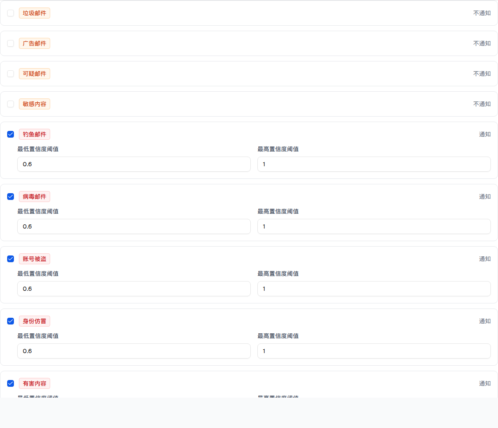
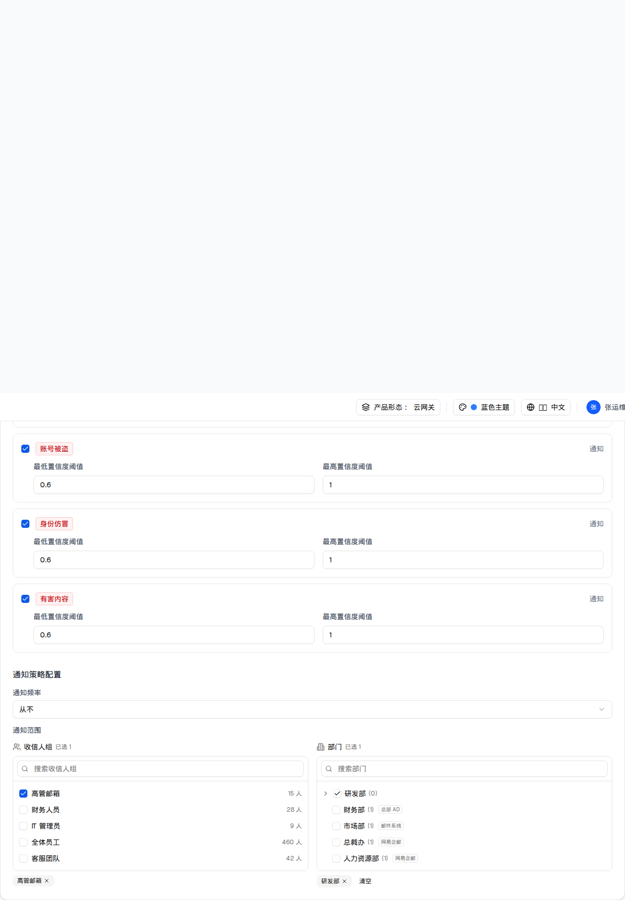

| 所属组件 | 2.3 分类通知控制 + 2.4 通知策略配置 |
| 主文件 | email-handling-disposal-settings/index.html |
| 触发路径 | 层级0（隔离区设置 Tab）→ ① 取消勾选某类邮件的通知复选框；② 通知频率下拉选「从不」 |

| 元素 | 勾选态 | 取消勾选态 |
|---|---|---|
| Checkbox | data-state=checked | data-state=unchecked |
| 右侧状态文案 | 通知 | 不通知 |
置信度阈值区（.ml-6.grid.grid-cols-2） | 渲染（2 个 number 输入，min=0 max=1 step=0.01） | 不渲染（条件渲染 {type.notifyEnabled && …}） |
| 类型徽章 | 配色不随开关变化（恶意=红、灰邮件=橙，来自 getMailTypeColor） | |
| 比对项 | demo 实际 DOM | 提取的 HTML | 是否一致 |
|---|---|---|---|
| 根节点 | div.space-y-3（9 个类型行的容器） | 同 | 一致 |
| 类型行数 | 9 | 9 | 一致 |
| 取消勾选行的 number 输入 | 0 个（节点被移除） | 0 个 | 一致 |
| 其余勾选行的 number 输入 | 每行 2 个（min=0 max=1 step=0.01） | 同 | 一致 |
| 状态文案 | 「不通知」× 4（ad/suspicious/sensitive + 被取消的 spam） | 同 | 一致 |
分数区间仅作用于引擎概率检测；命中黑名单、规则等确定性判定的邮件（无置信度分数）将始终通知，不受分数区间限制。

| 频率值 | 通知时间点区 | 通知范围区 | 备注 |
|---|---|---|---|
daily 每日（默认） | 显示 | 显示 | 默认时间点 09:00、14:00 |
never 从不 | 隐藏（条件渲染 {notifyFrequency !== "never" && …}） | 显示 | 已配置的时间点仍保留在组件 state 中，切回「每日」会原样出现 |
custom 自定义 | 显示 | 显示 | 与「每日」的 UI 完全相同，没有任何日期/星期选择控件 —— 见主文件 §9 D3 / §10 Q1 |
| 比对项 | demo 实际 DOM | 提取的 HTML | 是否一致 |
|---|---|---|---|
| 根节点 | div[data-slot=card].p-6（通知设置卡片） | 同 | 一致 |
| 后代节点数 | 273 | 273 | 一致 |
input[type=time] | 0 个 | 0 个 | 一致 |
| 时间点 chips（09:00 / 14:00） | 不渲染 | 不渲染 | 一致 |
| 通知范围选择器 | 仍渲染（收信人组 + 部门树） | 同 | 一致 |